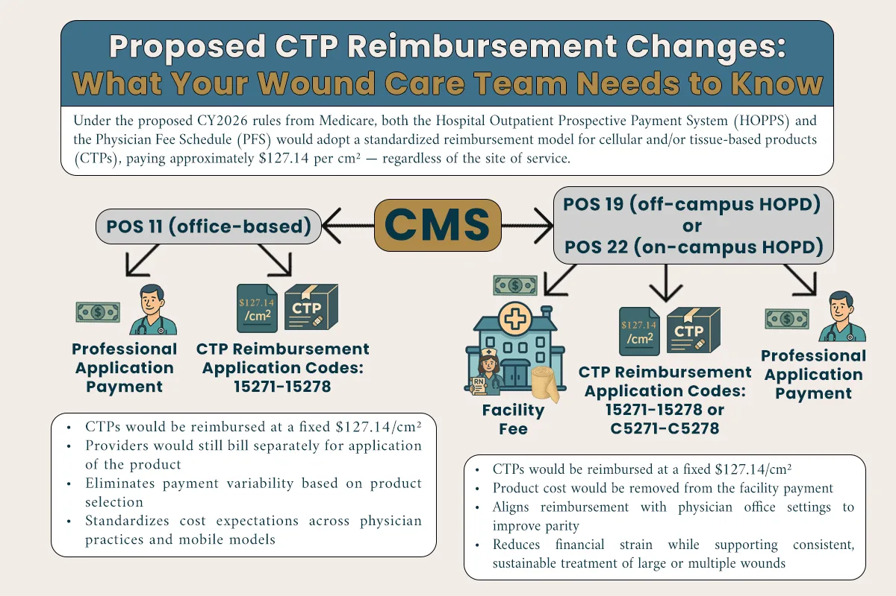
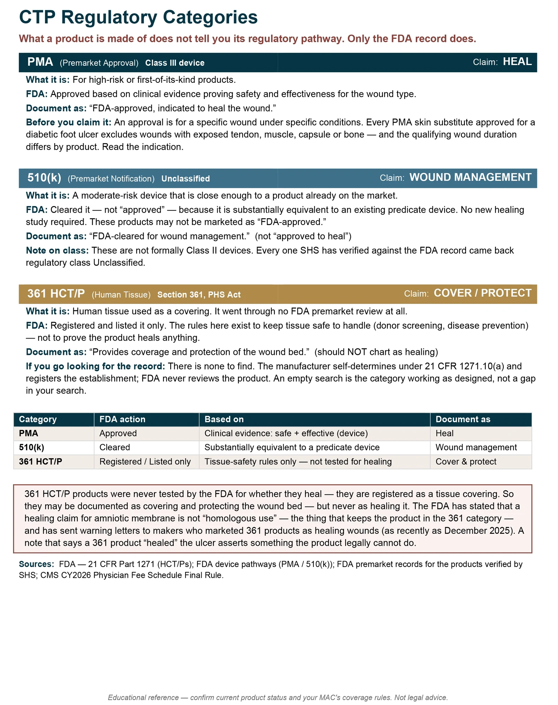
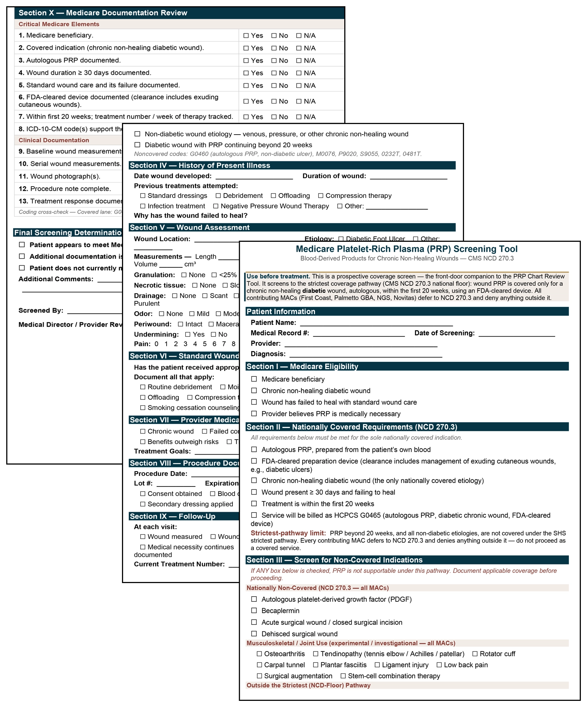
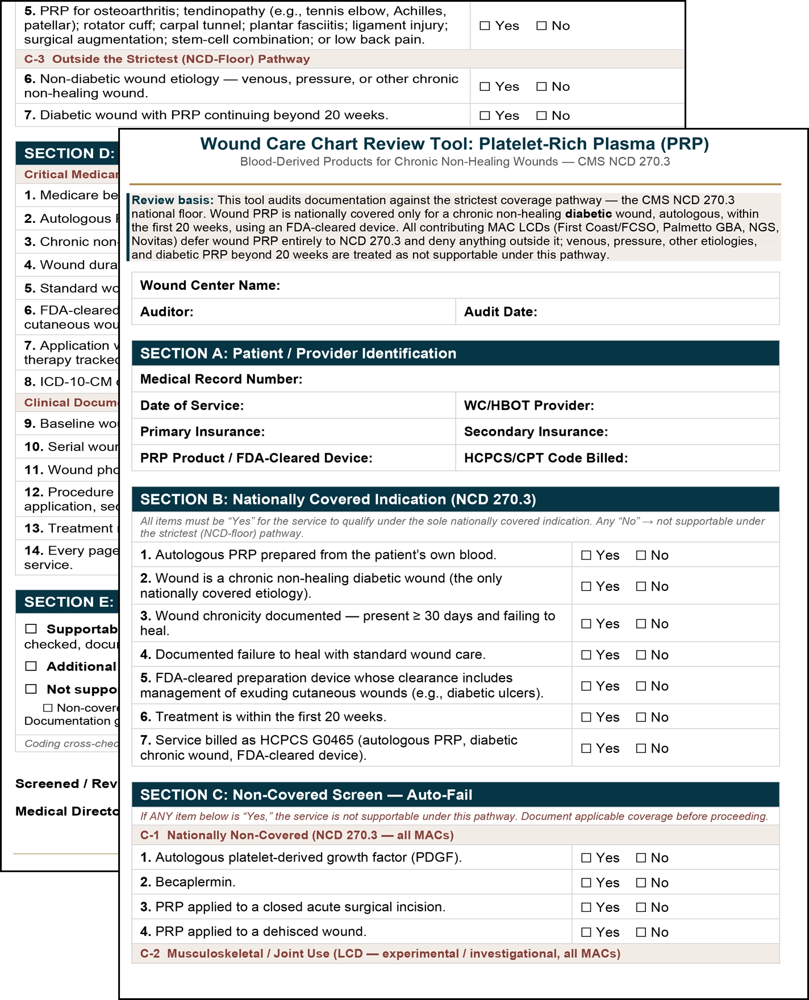
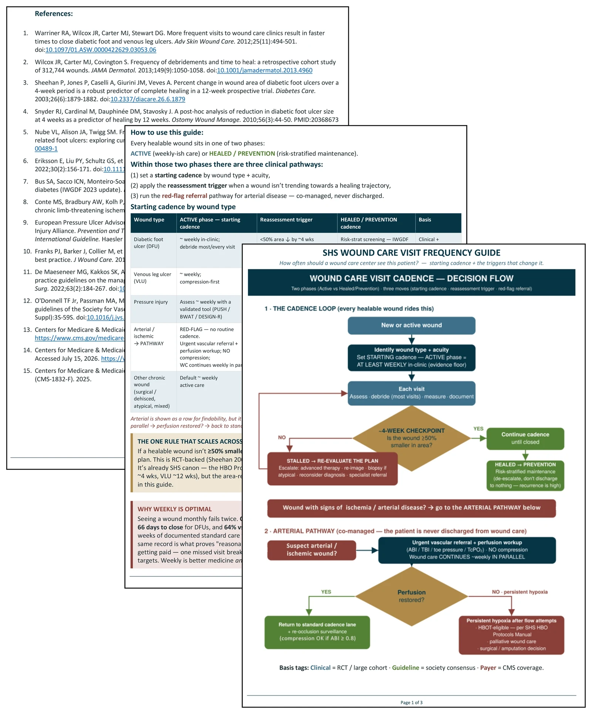
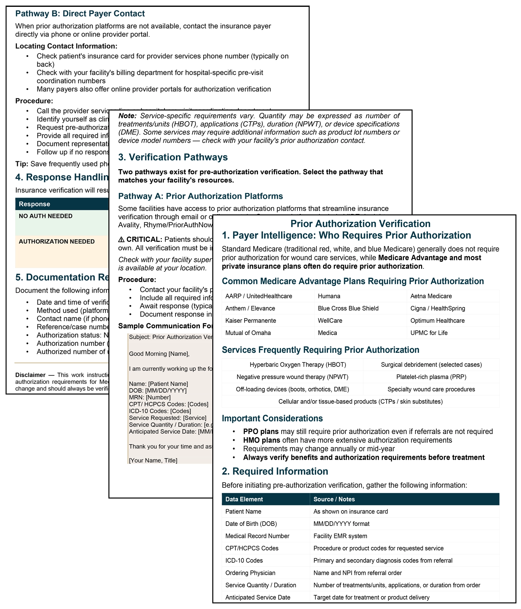
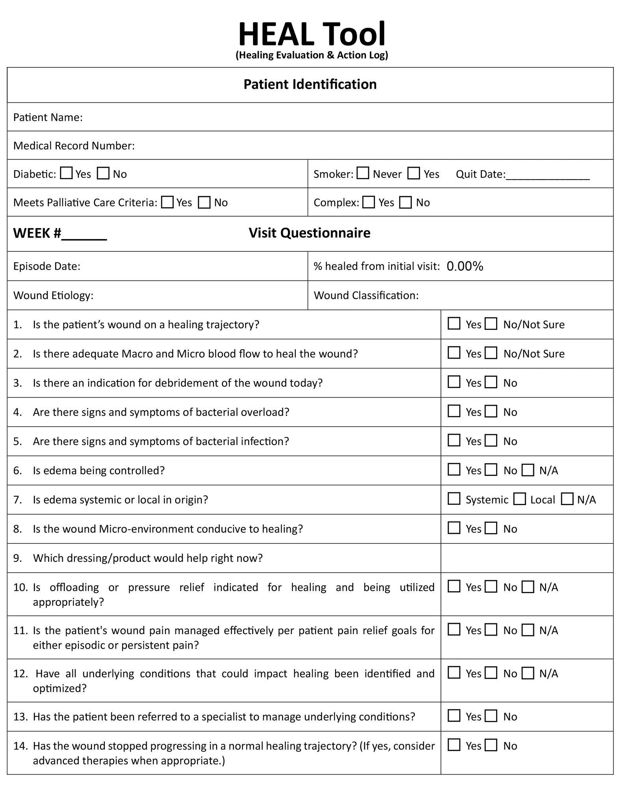
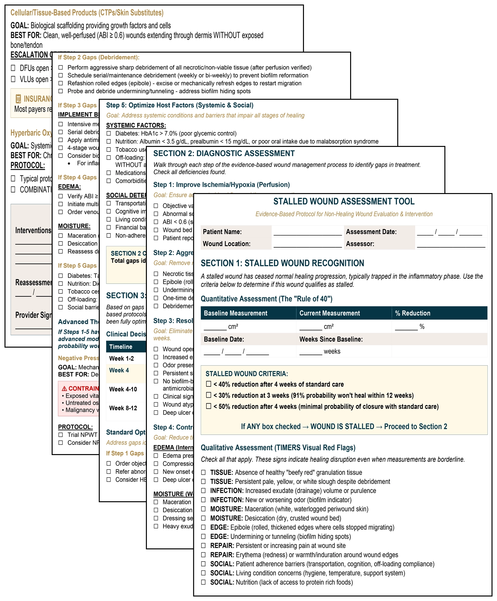
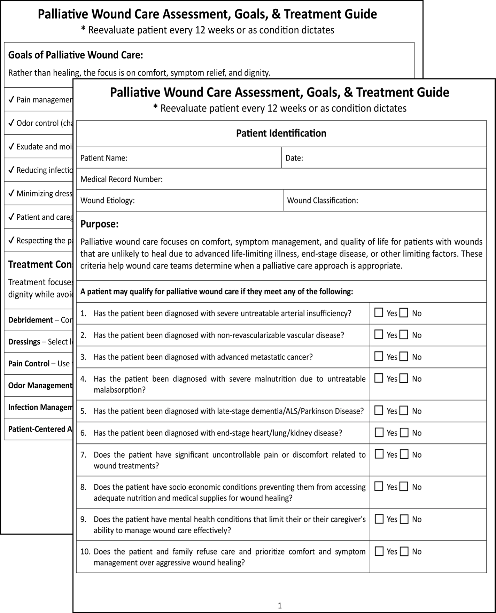
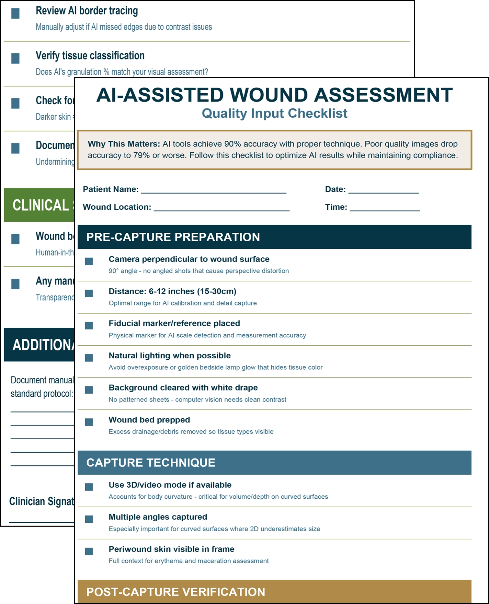

Matthew A. Davis, MBA
Operations & Corporate Development · Systems Design · Strategic Communications · Independent R&D

Tools · Shared Health Services
Coverage & Documentation
Coverage
Coverage policies are easy to quote and hard to apply the same way twice. These tools were built around the moments uncertainty creeps in: when Medicare changes how a service is reimbursed, when documentation standards shift between contractors, when a treatment falls into a regulatory gray area or when a clinician needs to know whether a service can actually be supported before it’s performed.
Since 2024, Medicare has gone back and forth on cellular and tissue-based products: whether physician practices can apply them, whether hospitals and practices are paid the same, how many applications a year are reasonable, which codes survive and what medical necessity has to look like. The job was to put all of it on as few pages as possible, with no gray area, and keep those pages true every time the policy moved again.
Platelet-rich plasma raised the same questions in a different form, and the answer had to work as one document for every partner, under whichever Medicare contractor it answers to, including the next partner to sign.
Some tools answer a question that shouldn’t need one. “How often should we be seeing our patients?” comes up constantly, and the answer starts in each contractor’s own coverage policies and articles. The visit frequency guide lays it out.
Prior authorization follows one rule: verify any treatment used routinely that runs more than about $250, especially anything in the news. If you’ve heard about it recently, so has the person who’s going to audit you.






Assessment
When a wound hasn’t moved in months, the hardest question isn’t what the wound looks like. It’s what has to change. These tools were built around that moment: identifying barriers to healing, recognizing when the current plan has stopped producing results and determining whether healing remains a realistic goal at all.
All of that depends on measurement, and measurement is changing. Electronic health records, wound-specific platforms included, are adding AI-assisted features, and the one that lands hardest in wound care is imaging: take a photo, and the software measures the wound and classifies the tissue. That’s a real gain, but the result is only as reliable as the photo behind it, and almost no one is giving clinicians guidance. The checklist builds the repeatability in on the clinician’s side: how the image is prepared and captured, how the software’s tracing is checked, and how any correction is documented.



